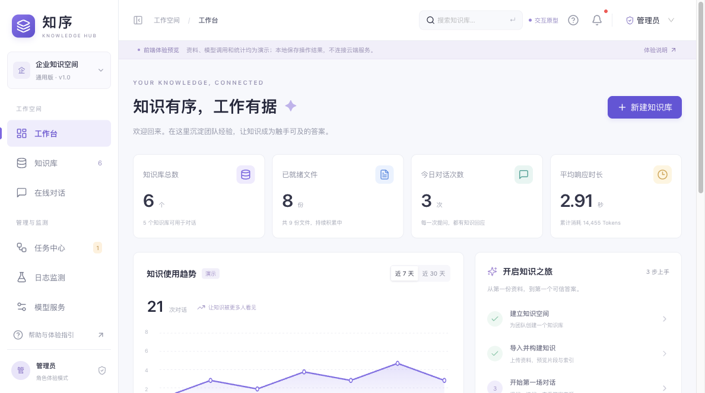

企业知识中台 · 通用版让知识有序流动，
让回答有据可查。
从文件导入、解析分块到知识检索与在线对话，
用清晰的工作流程连接团队的每一份知识。
本次发布范围：线上接入真实 FastAPI / LangChain 后端及 AIHubMix 模型，知识与向量保存在 Neon 数据库，原文件保存在私有 Blob。公开免登录，三角色可自由切换。图片与扫描件需另配云端 OCR。
一个完整的知识工作空间
面向企业内部 1.001 / KNOWLEDGE
导入与构建
Word、PDF、Markdown、图片和表格统一入口，自动提取元数据，多种策略切分预览，确认版本后构建知识索引。
02 / ANSWERS
问答与来源
按知识库选择检索范围，使用混合检索、重排、流式回答和引用原文查看。
03 / OPERATIONS
角色与监测
三角色自由切换，知识库按角色可见；独立配置客服与报告应用，集中管理任务、模型及应用日志。
导入资料→解析预览→构建知识库→检索与问答→引用与日志
为桌面 Web 设计
页面示意 · 演示数据● ● ●知序 · 企业知识空间

START HERE
怎样验收这一版？
直接在云端完成导入、构建与真实知识问答。
元数据、版本检索与多场景应用已接入真实服务端。
查看完整验收说明 →- 打开 Web 知识中台，切换管理员、知识库管理人员、使用者。
- 新建知识库，导入示例或本地 Markdown，查看解析预览。
- 确认版本并构建，在对话中查看当前与历史资料引用。
- 在应用中心发布客服或报告应用，查看任务、日志并导出报告。
- 图片、扫描 PDF 请先在解析设置配置云端 OCR。
Web：React · TypeScript · Ant Design | 后端：FastAPI · LangChain
内网部署：PostgreSQL / pgvector · Redis / Celery · Docker Compose